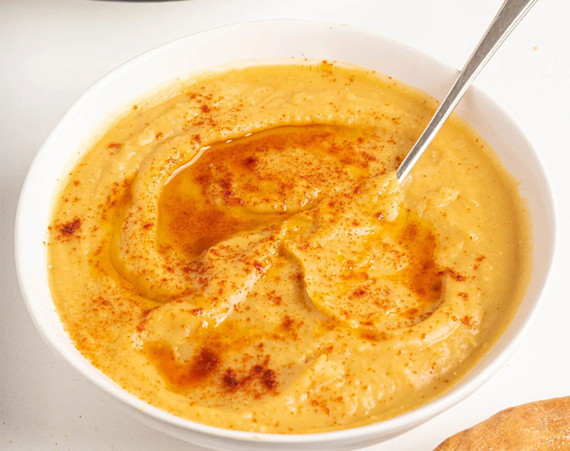

Home
Moroccan Bisarra (Moroccan Fava Bean Soup)

This Moroccan Fava Bean Soup is creamy, full of flavor, and uses just a few simple ingredients before being pureed. It's also naturally plant based and gluten-free.
Ingredients
- 4 ½ cups dried split fava beans
- 8 cups water
- ½ cup olive oil
- 3 cloves of garlic
- 2 tablespoons cumin
- 2 tablespoons salt
- 2 tablespoons paprika
- 1 chili pepper – stem removed (optional)
- Moroccan bread to dip (optional)
Instructions
- Rinse beans if necessary. Add all ingredients to a heavy bottomed soup pot.
- Bring to a boil, lower heat to low and cover, leaving a crack open. Simmer for 30-45 minutes or until the beans are soft. Watch and add more water if it appears too dry.
- Blend with an immersion blender or stand blender in batches. Serve with a drizzle of olive oil, toasted torn pieces of bread, a sprinkle of paprika and cumin.